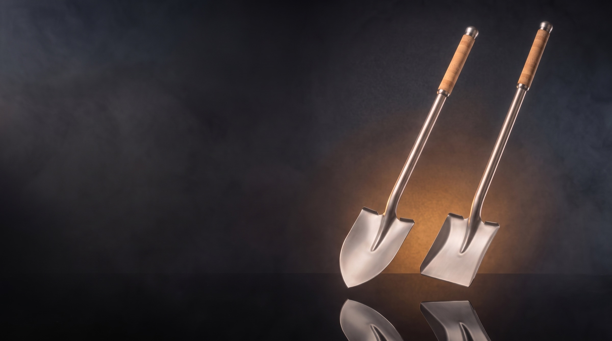

軽さ
チタンの比重は約4.51。鉄（約7.8）のおよそ6割です。同じ体積なら、それだけ軽い金属。持ち上げ、振り下ろす動作を繰り返す道具にこそ、活きる性質です。※

※画像はイメージです。実際の商品とは異なる場合があります。
CONCEPT
掘る、すくう、ならす。スコップは、現場でいちばん長く手の中にある道具のひとつです。
その当たり前の一本を、ブレードから柄までチタニウムで仕立て直しました。形は、現場で使い慣れた剣先と角。柄はまっすぐな丸柄。奇をてらわず、道具としての基本に向き合っています。
そして、手が触れる場所にだけ、ピュアモルトウイスキーの瓶を封じていたコルク栓を。役目を終えた素材を、もう一度、働く手のために。
PERFORMANCE
チタンとコルク。それぞれの素材が持つ性質を、現場の道具に活かしました。
チタンの比重は約4.51。鉄（約7.8）のおよそ6割です。同じ体積なら、それだけ軽い金属。持ち上げ、振り下ろす動作を繰り返す道具にこそ、活きる性質です。※
チタンは表面に緻密な不動態皮膜（酸化皮膜）をつくるため、水や泥に触れても錆びにくい金属です。雨の日の現場や、洗って片付ける毎日の手入れにも向いています。
重さあたりの強度を示す「比強度」が高いのもチタンの特徴。鉄の約2倍、アルミニウムの約3倍とされています。軽さと強さを両立しやすい素材です。※
コルクの比重は0.1〜0.2ほど。軽く、弾力と復元力があり、振動を吸収しやすい素材です。熱を伝えにくく、摩擦係数が高いため滑りにくいのも特長。握る部分にだけ使っています。※
※数値・性質は素材の一般的な物性値であり、本製品の性能を示すものではありません。

MATERIAL — TITANIUM
土に入るブレードから、手元へと伸びる柄まで。スコップの金属部分を、すべてチタニウムで仕立てています。
※素材の一般的な物性です。本製品の性能を示すものではありません。

ウイスキーは付属しませんウイスキー・酒類は含まれません。お届けするのはスコップ本体のみです。
※画像はイメージです。実際の商品とは異なる場合があります。UPCYCLED — PURE MALT CORK
グリップに使っているのは、ピュアモルトウイスキーの瓶に使われていたコルク栓。役目を終えた栓を再利用し、握る部分だけを天然コルクで仕上げました。
コルクは、コルクガシの樹皮からつくられる天然素材です。木を伐らずに、約9年の周期で樹皮を採取します。軽く、弾力があり、熱を伝えにくく、滑りにくい。道具の手元に向いた性質を持っています。※
主役は、あくまで道具としての性能。コルクの物語は、その一本にそっと添えた付加価値です。
※素材の一般的な性質です。
LINEUP
掘るなら剣先、すくうなら角。どちらもブレードから柄までチタニウム、握りは天然コルクです。
※離島など一部地域は別途ご案内となる場合があります。
IN THE FIELD

KENSAKI 剣先
溝掘り、根切り、締まった土へ。
尖った先端で土に差し込み、掘り進める作業のためのかたち。
※画像はイメージです。実際の商品とは異なる場合があります。KAKU 角
砂利をすくい、地面をならす。
平らなブレードで、砂・砂利・土をすくい、運び、ならす作業のためのかたち。
※画像はイメージです。実際の商品とは異なる場合があります。SPECIFICATIONS
二つのモデルの仕様を並べて比較できます。
| KENSAKI剣先 | KAKU角 | |
|---|---|---|
| 販売価格 | ¥39,800（税込） | ¥42,800（税込） |
| 全長 | 約1,150mm | 約1,150mm |
| ブレード（幅×長さ） | 約230×290mm | 約250×300mm |
| 重量 | 約1,100g | 約1,250g |
| 主な用途 | 掘削・穴掘り、根切り、硬い土・締まった地盤への差し込み、溝掘り | 砂・砂利・土のすくい上げ、土砂の積み込み・運搬、地面のならし、仕上げ・清掃 |
| 素材（ブレード・柄） | チタニウム | |
| グリップ | 天然コルク（ピュアモルトウイスキーのコルク栓を再利用） | |
| 柄の形状 | ストレート（丸柄） | |
| 送料 | 全国送料無料 | |
※寸法・重量はおおよその値です。ウイスキー・酒類は含まれません。お届けするのはスコップ本体のみです。
HOW TO ORDER
用途に合わせて、剣先または角をお選びください。
価格・送料・お届け時期・返品条件を、当サイトの確認画面でご確認いただけます。
決済はStripeの安全な決済画面で行います。カード情報が当サイトに保存されることはありません。数量もこの画面で変更できます。
ご注文確定後、5営業日以内に発送いたします。
FAQ
いずれもおおよその値です。全長やブレード寸法はスペック表をご覧ください。
チタンは表面に不動態皮膜（酸化皮膜）をつくるため、錆びにくい金属です。ご使用後は泥や汚れを水で洗い流し、よく乾かしてから保管することをおすすめします。
汚れた場合は、固く絞った布で拭き取り、風通しのよい日陰で乾かしてください。天然素材のため、長時間の水没や高温になる場所での保管は避けることをおすすめします。
ウイスキー・酒類は含まれません。お届けするのはスコップ本体のみです。
グリップには、ピュアモルトウイスキーの瓶に使われていたコルク栓を再利用した天然コルクを使用しています。素材として再利用しているもので、お酒は付属しません。
クレジットカード（Visa／Mastercard／JCB／American Express／Diners Club／Discover）、Apple Pay、Google Pay（お支払い画面に表示される方法からお選びいただけます）
ご注文時（Stripeの決済画面でお支払いが完了した時点）に決済されます。カード代金の引き落とし日は各カード会社の規定によります。
決済はStripeの安全な決済画面で行います。カード情報が当サイトに保存されることはありません。
送料：全国送料無料
ご注文確定後、5営業日以内に発送いたします。
※離島など一部地域は別途ご案内となる場合があります。
商品到着後8日以内、未使用品に限り返品を承ります。お客様都合による返品の送料はお客様のご負担となります。
不良品・誤配送の場合は、商品到着後8日以内にご連絡ください。当社負担で交換または返金いたします。
発送前のご注文はキャンセルを承ります。お問い合わせ先までご連絡ください。発送後のキャンセルは返品の扱いとなります。
詳しくは特定商取引法に基づく表記をご確認ください。
YOUR NEXT TOOL
掘るなら剣先、すくうなら角。
用途に合わせてお選びください。
¥39,800（税込）〜全国送料無料
ご注文前に、特定商取引法に基づく表記・プライバシーポリシーをご確認ください。